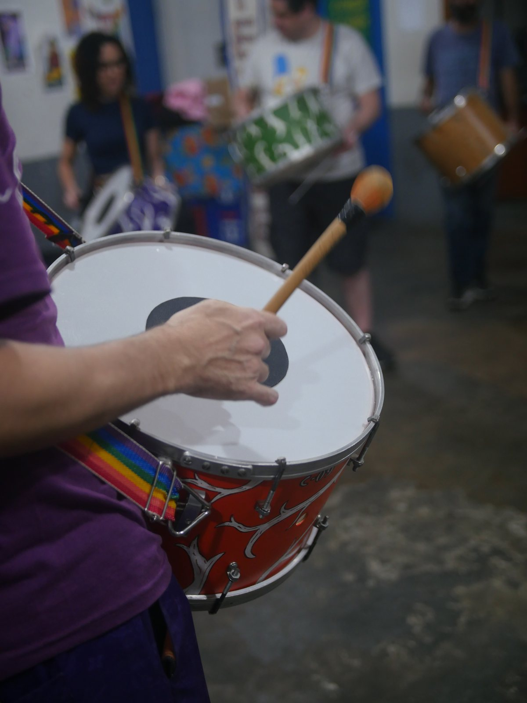

Turma exclusiva para iniciantes do zero
Às 19h, você começa aprendendo o pulso no corpo, a segurar o instrumento com conforto e as levadas essenciais em um ambiente sem julgamentos e sem pressa.

Aprenda zabumba, triângulo, caixa, ganzá ou pandeiro do zero toda segunda-feira na Fundição Progresso — você não precisa saber tocar e a gente empresta o instrumento nas aulas.
A maior parte dos nossos percussionistas chegou sem nunca ter segurado uma baqueta ou um triângulo. Estruturamos a oficina para derrubar cada trava logo na primeira segunda-feira.
Às 19h, você começa aprendendo o pulso no corpo, a segurar o instrumento com conforto e as levadas essenciais em um ambiente sem julgamentos e sem pressa.
Durante as aulas, o Bloco fornece zabumba, triângulo, caixa, ganzá e pandeiro para novos alunos testarem antes de decidir qual naipe querem adotar no módulo.
Você pode fazer a oficina só pelo prazer semanal de tocar e aliviar o estresse — e, se der vontade de subir ao palco ou sair no cortejo, será muito bem-vindo(a).
Nascido da banda Caramuela — formada em 2010 com raízes na agroecologia e na cultura popular brasileira — o Bloco do Caramuela leva desde 2018 a força do forró tradicional para as ruas, cortejos e grandes palcos do Rio de Janeiro.
Toda segunda-feira à noite, a Bateria Infinita se reúne na Lapa para aprender e tocar um repertório vivo com mais de 30 clássicos de Luiz Gonzaga, Marinês, Alceu Valença, Falamansa, Rastapé e Dona Zefa, além de composições autorais.
“Todos os arranjos das músicas do bloco nascem da sonoridade clássica do trio de forró — sanfona, zabumba e triângulo — expandida para uma bateria vibrante e acolhedora.”
Madrinhas do Bloco: Anastácia (Rainha do Forró) e Janayna Pereira


Escolha um instrumento abaixo para conhecer seu papel no bloco, ver quem ensina o naipe e interagir com o sequenciador de Baião e Xote.

É quem sustenta o pulso e faz todo mundo dançar. Você aprende a equilibrar a mão da maça (grave profundo) e a mão do bacalhau (contracanto seco e estalado) nas levadas de baião, xote, arrasta-pé e maracatu.
Nossa metodologia une técnica acessível, prática de conjunto desde os primeiros encontros e uma comunidade acolhedora que celebra a música brasileira o ano inteiro.
Às 19h, a turma de Iniciantes constrói base rítmica, postura e coordenação sem pressão. Às 20h30, a turma de Iniciados trabalha arranjos completos, viradas de naipe, dinâmica de palco e repertório de shows.
Todo aluno recebe material didático com vídeos e áudios de apoio para treinar no seu ritmo durante a semana, além de acesso ao grupo de WhatsApp com os professores para tirar dúvidas a qualquer momento.
Além das aulas, rolam ensaios gerais, apresentações no Carnaval, no Arraiá do Caramuela e em festivais — sempre de forma opcional. E depois da aula de segunda, a turma costuma esticar na Lapa para confraternizar e tocar livremente!

Músico, educador e fundador do Caramuela, Igor Conde conduz a Bateria Infinita toda segunda-feira com energia contagiante, arranjos pensados para incluir quem nunca tocou e uma escuta coletiva que transforma dezenas de percussionistas em um só corpo sonoro.
Cada instrumento conta com orientação específica de professores experientes da cena do forró e do carnaval carioca, garantindo atenção próxima na técnica de cada naipe.
Tudo transparente para você se planejar e chegar junto já na próxima segunda-feira.
Desconto Combo Duas Oficinas: 30% de desconto na segunda oficina ao combinar Percussão com Dança Popular, Cordas ou Sopros.
*Valor equivalente mensal no pacote completo fechado no início do módulo. Pagamentos no cartão podem incluir taxas da operadora. Empréstimo de instrumentos nas aulas já incluso para iniciantes.
Preencha os dados ao lado para abrir seu atendimento direto no WhatsApp com todas as suas escolhas, ou acesse diretamente nossa Ficha de Matrícula e o Grupo de Aula Aberta.